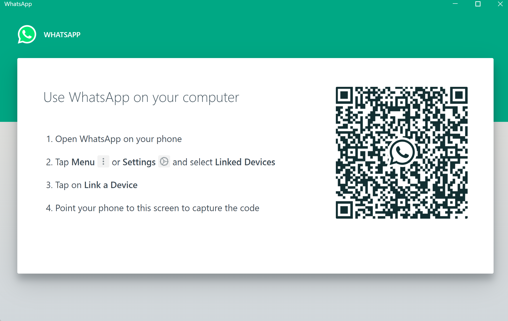

Idea Generation for Chat/IM Apps:
Directions:
Based on your needfinding, identify at least two needs you could address with your chat app. Then, for each, generate at least two ideas for how you could address these needs, ideally a lot more (remember: quantity over quality!). For each, create sketches to illustrate your ideas (these will also be useful in HW7 when you do paper prototyping), and accompanying text describing the need, the proposed solution, and why you think it will work.
For example, here are some ideas to seed your creative process.
- Add some organizational mechanism such as folders or tags to let users save some messages for later finding.
- To assist coordination, indicate that certain messages require replies from certain participants, and make sure users can find/interact with messages that require replies from them.
- An app for illiterate users that delivers voice messages
- Configure automatic replies to all or certain messages (e.g. "I'll be afk until 4pm and will respond then")
Inspiration:
Inspiration for the ideas included some of the following:
- One idea mentioned throughout the interviews was notifications, and would ideally be inspired by
Whatsapp's notification system(pictured below)! It's a sample notification for a Windows
laptop.
- This notifications allows users to see the sender's profile picture, their name, exit out of the notification, and best of all, reply to the text without entering the app(a desireable feature for any desktop).
- This will also reduce the probability of users forgetting to respond.
- Another inspiration for the designs is the login system in Whatsapp, which makes it extremely
easy to start a session on new non-celular devices and is depicted below.

Idea 1:
hi
Idea 2:
hi